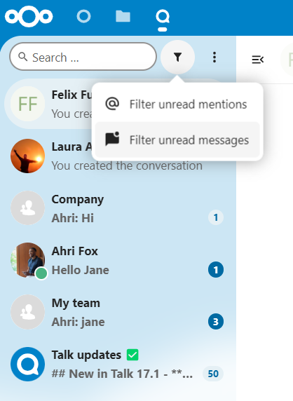

Основы работы Nextcloud Talk
Nextcloud Talk позволяет общаться и проводить видеозвонки на собственном сервере.
Чаты и звонки происходят в беседах. Вы можете создать любое количество бесед. Существует два вида бесед:
Разговоры один на один. В этом случае вы общаетесь или созваниваетесь с другим пользователем Talk. Вы не можете добавить других людей в этот разговор или поделиться им с помощью ссылки. Вы можете начать прямой разговор один на один, найдя другого пользователя в строке поиска, а затем щёлкнув его имя.
Групповые разговоры. Помимо человека, создавшего разговор, в групповом разговоре может участвовать любое количество людей. Групповая беседа может быть доступна по ссылке, чтобы внешние пользователи могли присоединиться к разговору. Она также может содержать список, чтобы другие пользователи на вашем сервере Nextcloud могли присоединиться к разговору.
Создание чата
Вы можете создать прямой чат один на один, найдя имя пользователя, группы или круга и нажав на него. Для одного пользователя сразу же создаётся беседа, и вы можете начать общение. Для группы или круга вы можете выбрать имя и настройки, прежде чем создать беседу и добавить участников.

If you want to create a custom group conversation, click the button next to the search field and filters button and then on Create a new conversation.

You can then pick a name for the conversation, put a description, and set up an avatar for it (with uploaded photo or emoji), and select if the conversation should be open to external users and if other users on the server can see and join the conversation.

На втором этапе вы можете добавить участников и завершить создание беседы.

Вы можете в любой момент отменить создание беседы, щёлкнув мышью за пределами белой области меню.

View all open conversations
You can view all the conversations that you can join by clicking the button next to the search field and filters button and then on Join open conversations.

Filter your conversations
You can filter your conversations using the filter button located next to the search field. There are two options for filtering: 1. Filter unread mentions: This option allows you to view group conversations with unread mentions or unread one-on-one conversations. 2. Filter unread messages: This option allows you to view all unread messages in all joined conversations.
{kind=link}
You can then clear the filter from the filters menu.

Обмен файлами в чате
Вы можете обмениваться файлами в чате 3 способами.
Во-первых, вы можете просто перетащить их в чат.

Во-вторых, вы можете выбрать файл из своих файлов Nextcloud Files или из файлового менеджера, выбрав маленькую скрепку и указав, откуда вы хотите взять файл.


Вы можете добавлять новые файлы, пока не закончите и не решите поделиться файлами.

Все пользователи смогут нажимать на файлы для просмотра, редактирования или загрузки, независимо от наличия у них учётной записи. Пользователи с учётной записью автоматически получают доступ к файлам, в то время как внешние гостевые пользователи получают их в виде общедоступной ссылки.

Вставка эмодзи
Вы можете добавить эмодзи с помощью переключателя, расположенного слева от поля ввода текста.

Using Markdown
You can enhance your messages with a markdown syntax support. See list for usage:
Headings and dividers
# Heading 1
## Heading 2
### Heading 3
#### Heading 4
##### Heading 5
###### Heading 6
Heading
===
Normal text
***
Normal text
Inline decorations
**bold text** __bold text__
*italicized text* _italicized text_
`inline code` ``inline code``
```
.code-block {
display: pre;
}
```
Lists
1. Ordered list
2. Ordered list
* Unordered list
- Unordered list
+ Unordered list
Quotes
> blockquote
second line of blockquote
Setting reminder on messages
You can set reminders on specific messages. If there’s an important message you want to be notified about later, simply hover over it and click on the reminder icon.

In the submenu, you can select an appropriate time to receive a notification later.

Ответы на сообщения и многое другое
Ответить на сообщение можно с помощью стрелки, которая появляется при наведении на сообщение.

В меню с тремя точками``…`` вы также можете выбрать ответ в приватном режиме. При этом откроется чат один на один.

Здесь вы также можете создать прямую ссылку на сообщение или пометить его непрочитанным, чтобы вернуться к нему в следующий раз, когда вы войдёте в чат. Если это файл, то вы можете просмотреть его в разделе Файлы.
Управление беседой
You are always moderator in your new conversation. In the participant list you can promote other participants to moderators using the ... menu to the right of their user name, assign them custom permissions or remove them from the conversation.
Changing permissions of a user that joined a public conversation will also permanently add them to the conversation.

Moderators can configure the conversation. Select Conversation settings from the ... menu of the conversation on the top to access the settings.

Here you can configure the description, guest access, if the conversation is visible to others on the server and more.

Messages expiration
A moderator can configure message expiration under the Conversation settings within the Moderation section. Once a message reaches its expiration time, it is automatically removed from the conversation.
The available expiration durations are 1 hour, 8 hours, 1 day, 1 week, 4 weeks, or never (which is the default setting).

Начало вызова
When you’re in a conversation, you can start a call any time with the Start call button. Other participants will get notified and can join the call.

If somebody else has started a call already, the button will change in a green Join call button.

During a call, you can mute your microphone and disable your video with the buttons on the right side of the top bar, or using the shortcuts M to mute audio and V to disable video. You can also use the space bar to toggle mute. When you are muted, pressing space will unmute you so you can speak until you let go of the space bar. If you are unmuted, pressing space will mute you until you let go.
Вы можете скрыть видео (полезно при совместном использовании экрана) с помощью маленькой стрелки, расположенной над видеопотоком. Включите видео обратно с помощью маленькой стрелки.
You can access your settings and choose a different webcam, microphone and other settings in the ... menu in the top bar.

From media settings dialog, you can also change the background of your video.

You can change other settings in the Talk settings dialog.

Изменение вида во время вызова
Вы можете переключать вид во время разговора с помощью маленького значка с четырьмя блоками в правом верхнем углу между видом с продвижением и видом сетки. Вид сетки покажет всех одинаково крупно, а если люди не помещаются на экране, слева и справа появятся кнопки, позволяющие перемещаться.

В раскрученном виде спикер отображается крупно, а другие люди располагаются в ряд ниже. Если люди не помещаются на экране, слева и справа появляются кнопки, позволяющие перемещаться.